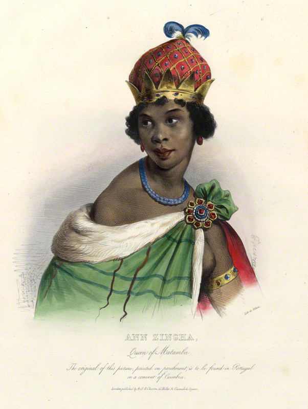
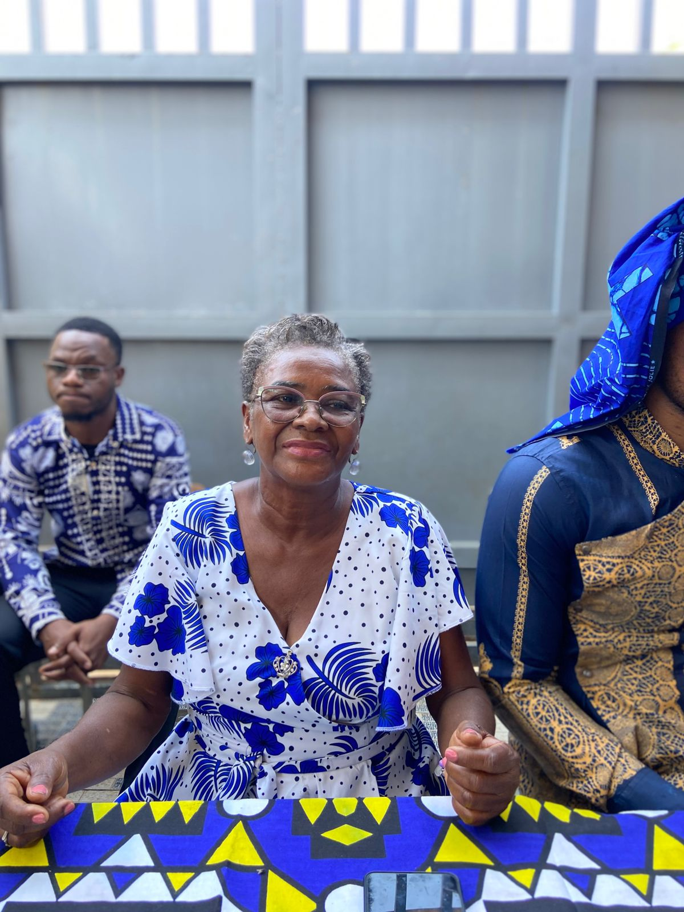
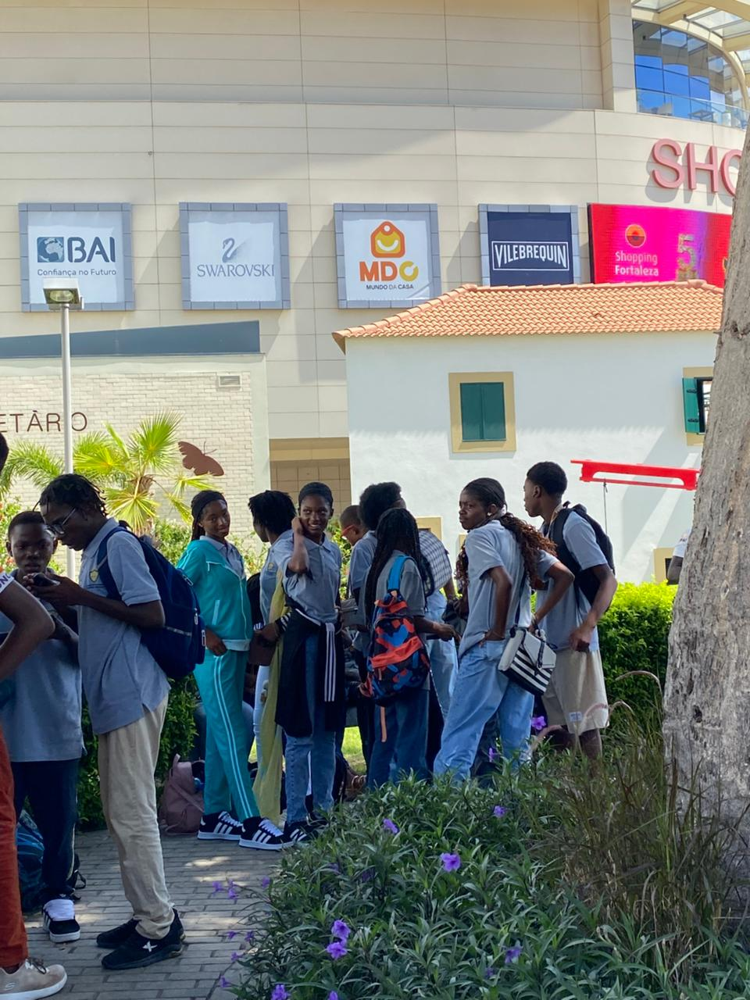
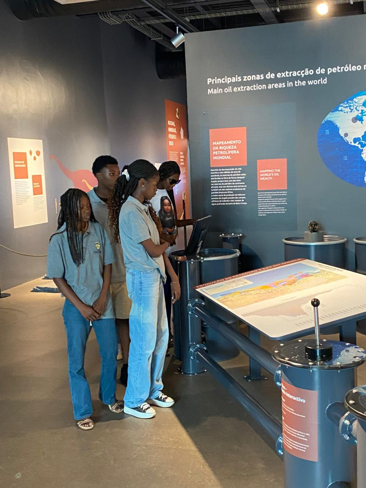
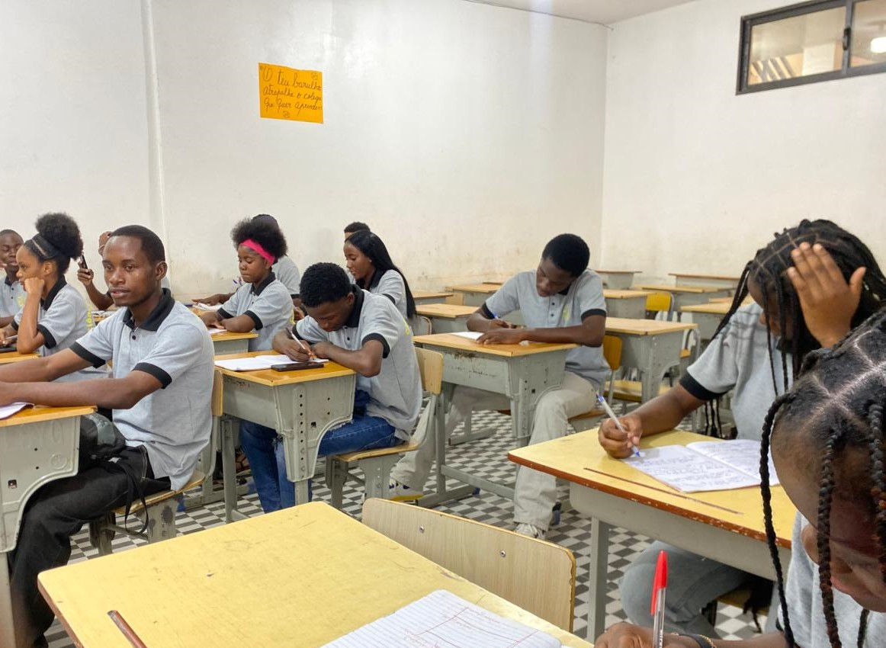
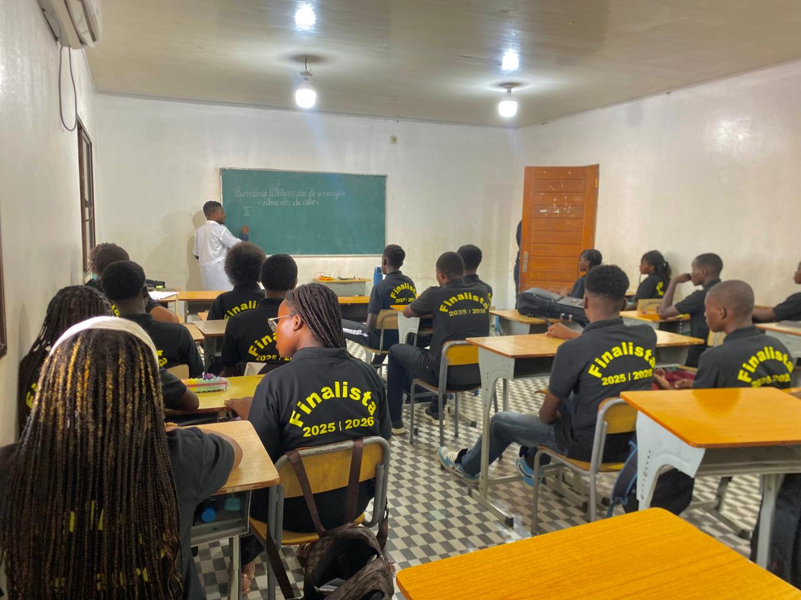
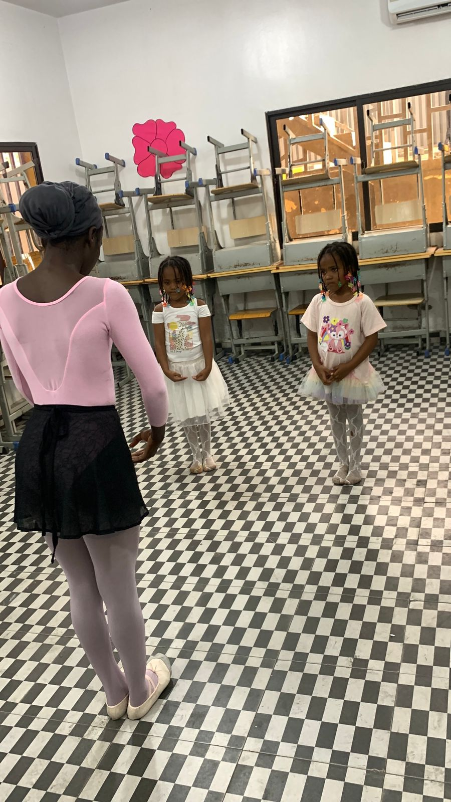
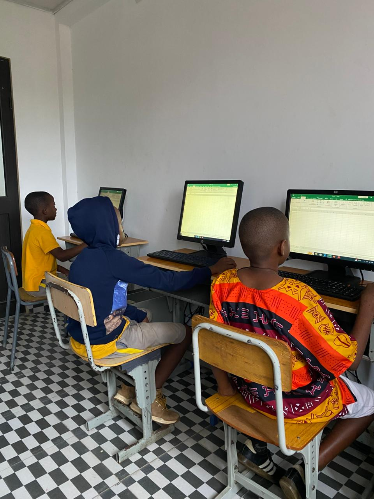
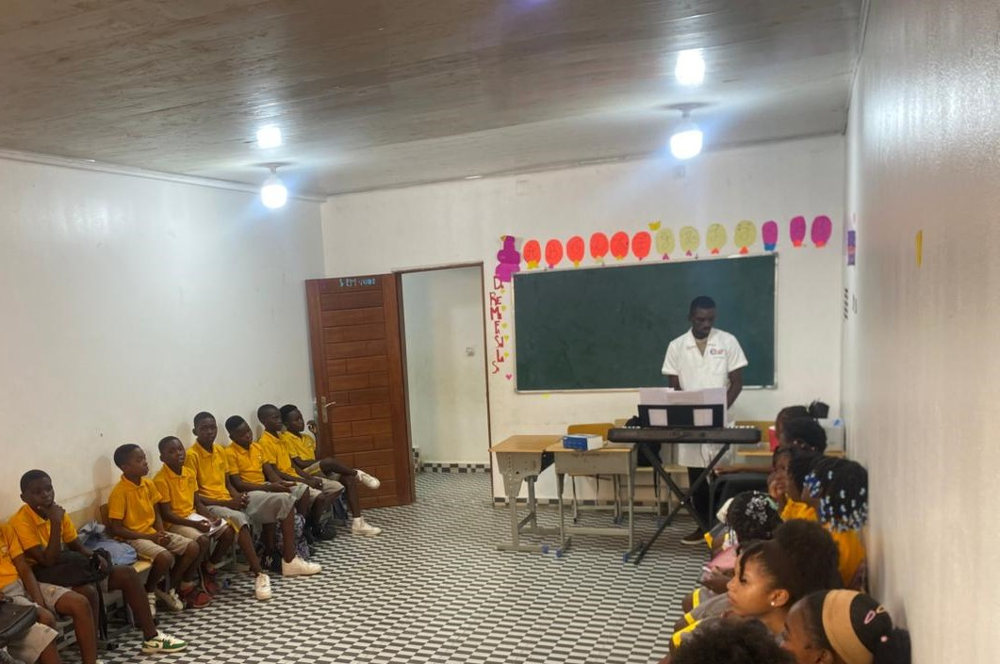

Moldando o Futuro
com Excelência.
Desde a nossa fundação, o Nzinga Mbandi tem sido um farol de conhecimento, unindo o rigor académico à sensibilidade humana.
A Rainha Nzinga foi uma importante líder africana de Angola, conhecida pela coragem e luta contra a colonização portuguesa. Nasceu em 1583, no Reino do Ndongo, filha do rei Kiluanji Kia Samba. Demonstrou inteligência e liderança desde jovem. Após a morte do irmão, Ngola Mbandi, tornou-se rainha em 1624, governando os reinos do Ndongo e Matamba. Seu nome é símbolo de resistência e patriotismo.

+5
Anos de HistóriaNossa História
Fundada sobre os princípios da liderança e resiliência, a escola nasceu com o desejo de oferecer uma educação que transcende a sala de aula.
Nossos Valores
Inspirados pela Rainha Nzinga, valorizamos o rigor, a resiliência e a excelência, formando estudantes guerreiros, disciplinados e preparados para alcançar os seus objetivos com sabedoria e determinação.
Nossa Missão
Acompanhar os estudantes na realização dos seus objetivos. Inspirar os estudantes a terem objetivos nos estudos em prol da sociedade e ajudá-los na caminhada para o seu cumprimento.
Equipa de Liderança
Mestres e gestores comprometidos com a jornada individual de cada estudante.

Dr. Graça Bambi
Diretora GeralEspecialista em Gestão Educacional. Lidera a visão estratégica da instituição.

DP. Luís
Diretor PedagógicoFormado em Gestão Escolar, focado em metodologias ativas e tecnologia.
Cor. Yolanda João
Coordenação & Extensão (Manhã)Responsável pelas atividades da manhã, acompanhando e motivando os estudantes na realização dos seus objetivos.

Cor. Isaac Alberto
Coordenação & Extensão (Tarde)Responsável pelo período da tarde e pela dinamização de atividades de carácter académico e initiatives educativas.
Nossos Alunos
Conheça alguns dos nossos estudantes.




Nossos Serviços
Disponibilizamos serviços educativos e atividades complementares que visam o crescimento académico.

2026Aulas de Ballet
As aulas de ballet já estão abertas para os nossos estudantes. Esta atividade promove a disciplina, a postura, a coordenação e a expressão corporal.
Se Inscrever
2026Aulas de Informática
As aulas de informática desenvolvem competências digitais essenciais, desde o uso do computador até ferramentas de produtividade e introdução à programação.
Se Inscrever
2026Aulas de Música
As aulas de música têm como objetivo desenvolver o talento e a sensibilidade musical dos estudantes, promovendo a criatividade e o ritmo.
Se Inscrever